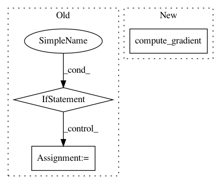

e818c9e626fc5c95516e68fb2282f07d0232eea9,tensorflow/python/kernel_tests/relu_op_test.py,ReluTest,testGradientFloat16,#ReluTest#,124
Before Change
// In TensorFlow 1.x, invoking f() (without eager execution enabled)
// would construct a graph. Instead of construct a graph with O(100) nodes,
// we construct a single graph to be executed ~100 times in a Session.
if not tf2.enabled():
d32_tensor, d16_tensor = f()
with self.cached_session() as sess:
f = lambda: sess.run([d32_tensor, d16_tensor])
// Repeat the experiment for 100 times. All tensor shapes and its tensor
// values are randomly generated for each run.
for _ in xrange(100):
d32, d16 = f()
self.assertAllClose(d32, d16, atol=3e-4)
After Change
dtype=np.float16,
order="F")
err = gradient_checker_v2.max_error(
*gradient_checker_v2.compute_gradient(nn_ops.relu, [x]))
self.assertLess(err, 1e-6)
def testGradientFloat64(self):
In pattern: SUPERPATTERN
Frequency: 3
Non-data size: 3
Instances
Project Name: tensorflow/tensorflow
Commit Name: e818c9e626fc5c95516e68fb2282f07d0232eea9
Time: 2020-11-18
Author: gardener@tensorflow.org
File Name: tensorflow/python/kernel_tests/relu_op_test.py
Class Name: ReluTest
Method Name: testGradientFloat16
Project Name: tensorflow/cleverhans
Commit Name: 4a9d43c1a1a88c183b8afb4600f8af05c00cdb75
Time: 2019-04-24
Author: lorenzhofmann.w@gmail.com
File Name: cleverhans/future/tf2/attacks/fast_gradient_method.py
Class Name:
Method Name: fast_gradient_method
Project Name: tensorflow/tensorflow
Commit Name: 1427bfc12ec5a3a2c6a4ffd57fc5b465d3eedfae
Time: 2020-11-19
Author: gardener@tensorflow.org
File Name: tensorflow/python/kernel_tests/relu_op_test.py
Class Name: ReluTest
Method Name: testGradientFloat16